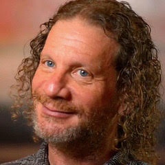
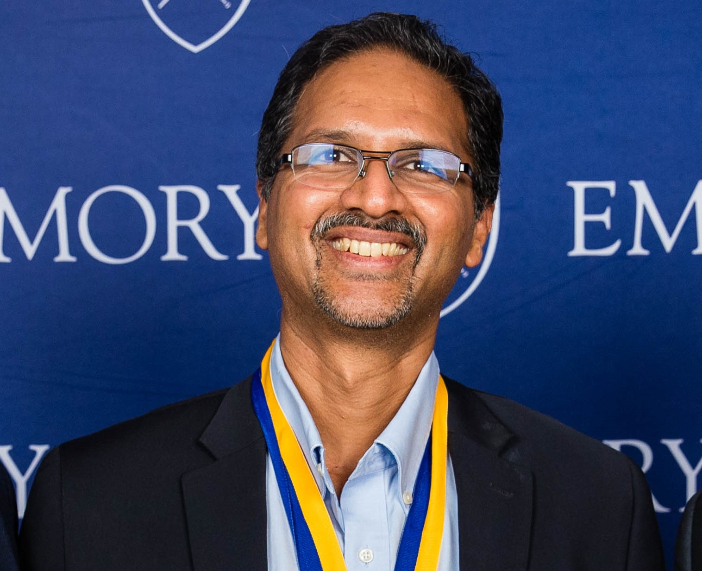

The Challenge
Arriving at the right diagnosis and treatment plan for a cancer patient, particularly in difficult or ambiguous cases, currently depends on a clinical care team's ability to synthesize deeply heterogeneous information: pathology, radiology, genomics, patient history, and more. Achieving accurate diagnoses at even earlier stages of disease, where treatment options produce substantially better long-term outcomes for patients, is even more challenging as it may require even more heterogenous data (e.g., wearable data and other biometrics). These data streams are rarely integrated in any principled way, and the sheer complexity of doing so exceeds human cognitive bandwidth in hard cases. Standard machine learning operates on data that has already been structured and harmonized, which introduces additional challenges.
The Opportunity: Embeddings
The opportunity embeddings offer is to represent a patient as a point, or trajectory, in a high-dimensional space that simultaneously encodes their molecular, imaging, clinical, and reported-outcome data. This multimodal representational capacity is challenging with standard AI approaches because of the complexity in integrating multiple data streams and inputs. The key innovation is in fusion: embedding techniques that can place heterogeneous observations into a shared latent space where their relationships become computationally tractable, enabling the kind of integrated clinical reasoning that is currently beyond reach.
The Approach
Multimodal embedding models capable of jointly representing imaging, genomic, and clinical data have advanced rapidly, but their application to cancer diagnostics remains largely confined to research demonstrations in single institutions on curated datasets. The hard problems – cross-institutional generalizability, extensive multi-modal data integration, clinician interpretability, and prospective clinical validation – have not been seriously attempted at scale. Embeddings represent a credible path to overcoming exactly that barrier; but only if proposals are structured to demonstrate cross-institutional generalizability, not just single-site performance. An innovation lab will develop teams that may conceive of embedding-based approaches that construct a richer, more unified representation of individual patient presentations, with the explicit goal of surfacing actionable guidance for clinicians in cases where current diagnostic approaches fall short. Teams may elect to focus on any aspect of the cancer detection and diagnosis continuum spanning early screening to diagnostic evaluation to treatment selection and survivorship. Teams should also be expected to grapple with the interpretability challenge: embeddings are not inherently understandable to clinicians (or any humans for that matter), and the innovation lab should push participants to propose how embedding-derived outputs would be translated into guidance that a care team can act on. Proposals should include consideration of an appropriate validation framework; a plan for how embedding-derived insights would be tested for clinical truth.
The Innovation Lab
The AI Embeddings Innovation Lab is a collaborative, cross-disciplinary working session designed to generate bold, actionable projects.
Participation is limited to approximately 30 participants.
The Innovation Lab will include:
- Guided discussions
- Structured brainstorming
- Small-group collaboration
- Rapid concept development and refinement
- Input from Subject Guides (experts who help frame, challenge, and strengthen emerging ideas)
Participants will work together to:
- Envision new approaches for applying embedding techniques to complex cancer diagnosis and treatment challenges
- Form interdisciplinary teams around shared research directions
- Develop and refine innovative research proposals
This Innovation Lab is fast-paced, interactive, and future-oriented. It will bring together participants from diverse disciplines to engage in first-principles thinking and collaborative design.
The Lab will be facilitated by Knowinnovation, specialists in accelerating scientific innovation and supporting high-impact research communities. Participants can expect a highly interactive experience, with the majority of time devoted to small-group, solution-focused dialogue and collaborative development.
How We Got Here
This Innovation Lab builds on a structured process designed to turn collective insight into tangible research directions.
The journey began with two Town Halls in April, where a broad community of researchers, clinicians, and technologists surfaced the most pressing questions and opportunities in the field. These insights were then carried into a Convergence Session, where a curated group worked to identify and refine a small set of priority challenges.
Now, the Innovation Lab brings those efforts into focus - creating space for interdisciplinary teams to dive deeply into these challenges and develop innovative, actionable research ideas.
Who Should Apply
We are looking for participants who bring deep expertise in at least one of several key areas:
- Cancer research (especially focused on systems biology cancer research)
- Clinical oncology (especially focused on next generation diagnostics)
- Data science and machine learning
- Privacy and data governance
- Health data infrastructure
We particularly value individuals who have experience working across disciplinary boundaries and are comfortable navigating problems that don't yet have clear solutions. Seniority in a given field is welcome, but just as important is a willingness to engage with unfamiliar perspectives and contribute to early-stage, collaborative thinking.
The ideal cohort will include a mix of specialists, including:
- Cancer data scientists
- AI developers
- Embedding specialists
- Other data scientists
- Clinical oncologists
- Drug developers
- Cancer clinician scientists
- Pharma data scientists and other R&D scientists
- Complex systems modelers
- Cancer biologists
The Subject Guide Team
The Organizers have enlisted the guidance of a diverse subject guide team. They will serve to help guide discussions and work closely with the facilitation team to ensure participants are supported and workshop goals are reached.

Lawrence Hunter
University of Chicago School of Medicine
Dr. Lawrence Hunter is a professor at the University of Chicago School of Medicine. He is widely recognized as one of the founders of bioinformatics; he published some of the first papers in biomedical NLP and in machine learning predictions of molecular function; he served as the first President of the International Society for Computational Biology (ISCB); and he created several of the most important conferences in the field, including ISMB, PSB and the Rocky Mountain Conference on Bioinformatics. Dr. Hunter's research interests span a wide range of areas, from cognitive science to rational drug design. He has published more than 200 scientific papers, holds two patents and has been elected a fellow of both the ISCB and the American College of Medical Informatics.

Anant Madabhushi
Emory University
Dr. Anant Madabhushi is the Robert W Woodruff Professor of Biomedical Engineering; and on faculty in the Departments of Pathology, Biomedical Informatics, Urology, Radiation Oncology, Radiology and Imaging Sciences, Ophthalmology, Global Health and Computer and Information Sciences at Emory University. He is a researcher within the Cancer Immunology program at the Winship Cancer Center and also a Research Career Scientist at the Atlanta Veterans Administration Medical Center. Dr. Madabhushi has authored over 600 peer-reviewed publications and more than 235 patents either issued or pending in the areas of artificial intelligence, radiomics, medical image analysis, computer-aided diagnosis, and computer vision.
He is a Fellow of the American Institute of Medical and Biological Engineering (AIMBE), Fellow of the Institute for Electrical and Electronic Engineers (IEEE), Fellow of the American Association for Advancement of Science (AAAS) and a Fellow of the National Academy of Inventors (NAI). His work on "Smart Imaging Computers for Identifying lung cancer patients who need chemotherapy" was called out by Prevention Magazine as one of the top 10 medical breakthroughs of 2018. In 2019, Nature Magazine hailed him as one of 5 scientists developing "offbeat and innovative approaches for cancer research". In 2019, 2020, 2021 and 2022 Dr. Madabhushi was named to The Pathologist’s Power List of 100 inspirational and influential professionals in pathology. He is also an entrepreneur having started three companies, Elucid Bioimaging, Ibris Inc and Picture Health. In 2019, Elucid Bioimaging attained FDA approval for one of his technologies on the use of AI for carotid plaque characterization.